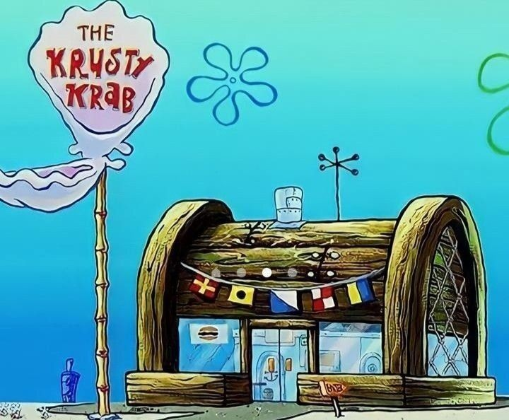

O Siri Cascudo é o restaurante mais famoso da Fenda do Biquíni no desenho Bob Esponja Calça Quadrada. De propriedade do Seu Sirigueijo, um caranguejo obcecado por dinheiro que construiu o local a partir de um antigo asilo de marinheiros; seu carro-chefe é o Hambúrguer de Siri, cuja fórmula secreta é o segredo mais bem guardado do oceano. Os personagens que trabalham no estabelecimento é o Bob Esponja como cozinheiro e o Lula Molusco como atendente.

Hambúrguer com carne realmente de siri empanado e crocante, queijo prato, folhas de rúcula, tomate seco, picles e a maionese de páprica da casa no pão brioche selado. Acompanha porção de fritas individual.